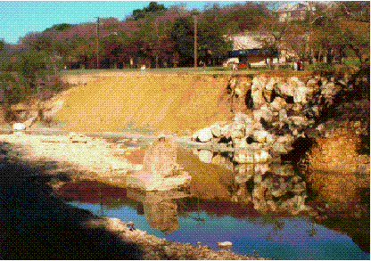
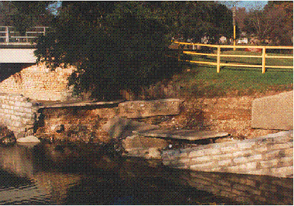
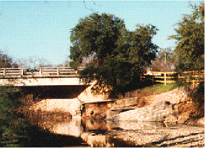
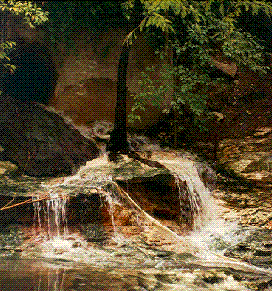
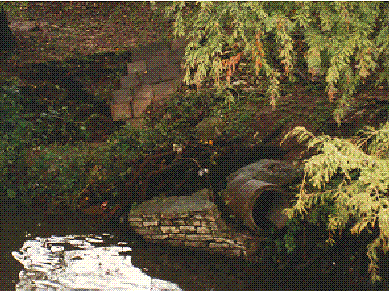

Examples of Flood Damage

Erosion along the 2200 block of Shoal Creek adjacent to Lamar Boulevard
in Austin, Texas.

A section of the Shoal Creek hike and bike trail at 8th Street
damaged by flooding in 1992.

Another view of the damaged Shoal Creek hike and bike trail at
8th Street.

An eroded bank along Waller Creek in Central Austin.

Collapsed drainpipe along Waller Creek in Central Austin.
Created by Katrin Molch, October 1995. Last revised 21 January 1998.
RRR.